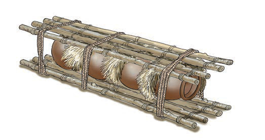

Place the items in boxes or bamboo baskets lined with soft materials like dry leaves to prevent breakage.
3.
Secure them within a wooden frame, ensuring they are separated by soft materials to avoid knocking against each other and breaking, as shown in Figure 13.

Figure 13: A wooden frame for a clay pot for holding and transportation
4.
Arrange clay pots in a pyramid format, as shown in Figure 14. In this arrangement, large and heavy pots are placed at the bottom while small and light ones are placed at the top. The bottom lines hold more pots than the top lines. This arrangement is designed to protect clay pots from sliding and falling. Moreover, the small pots will not break due to their weight.
A clay pot sits on a round pad to keep it steady and safe.Figure 12: A clay pot set on a round pad2.Place the items in boxes or bamboo baskets lined with soft materials like dry leaves to prevent breakage.3.Secure them within a wooden frame, ensuring they are separated by soft materials to avoid knocking against each other and breaking, as shown in Figure 13.Clay pots are packed in a wooden frame with soft padding between them for safe carrying.Figure 13: A wooden frame for a clay pot for holding and transportation4.Arrange clay pots in a pyramid format, as shown in Figure 14.In this arrangement, large and heavy pots are placed at the bottom while small and light ones are placed at the top.The bottom lines hold more pots than the top lines.This arrangement is designed to protect clay pots from sliding and falling.Moreover, the small pots will not break due to their weight.